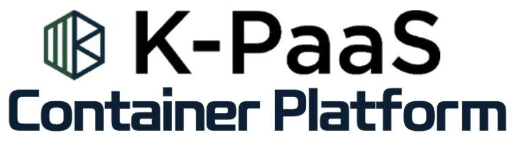
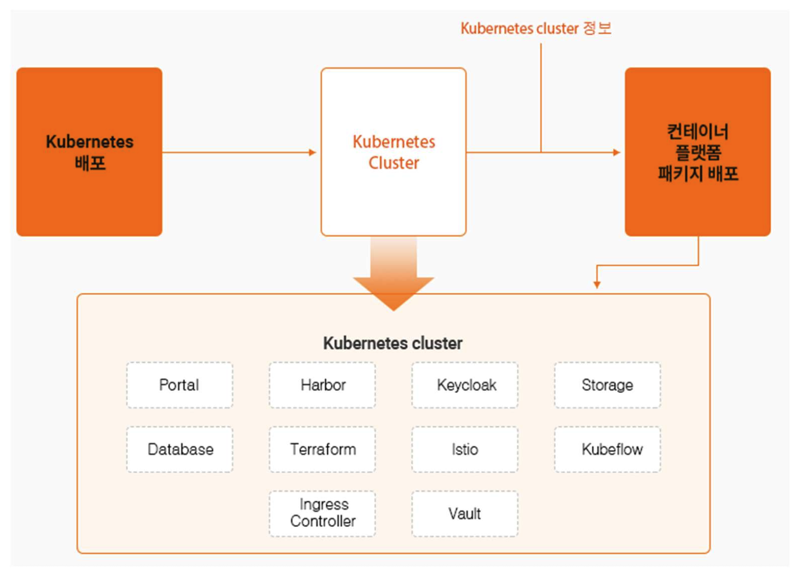

K-PaaS란
- 클라우드 인프라 위에서 SW나 서비스를 개발, 실행, 운영, 관리하는 기반 SW 환경
- Cloud Native Application을 위한 플랫폼 서비스의 핵심 기능, 다양한 상용 PaaS의 호환성 보장을 위해 공통된 기능들을 오픈 소스로 개발하고, 오픈소스로 개방
이해
컨테이너 플랫폼

- 쿠버네티스 기반의 단독 배포, 서비스형 배포 및 Edge 배포 기능을 구현하여 클라우드 기반 서비스 및 운영에 필요한 부가 서비스를 기원하는 오픈소스 PaaS 플랫폼
정의
- 쿠버네티스 클러스터 및 운영에 필요한 스토리지 서버로 구성
- 디스크립션을 기반으로 컨테이너화된 어플리케이션을 배포하는 방식으로 동작
배포
단독 배포
컨테이너 플랫폼을 단독으로 배포하여 독립된 쿠버네티스 환경을 제공하는 배포 방식

Edge 배포
Edge Computing 기반 배포 방식으로 단독 배포와 같이 쿠버네티스 클러스터를 Edge 환경에 단독으로 배포하여 독립된 쿠버네티스를 제공하는 배포 방식

주요 소프트웨어
kubespray
Kubernetes 설치를 지원하는 자동화 도구
Kubernetes
컨테이너화된 어플리케이션을 자동으로 배포, 스케일링 및 관리해주는 오케스트레이션 도구
cri-o
Kubernetes를 위한 표준(OCI) Container 런타임 인터페이스
Calico
Container, VM 환겨에서 L3 기반 Virtual Network 구축을 지원하는 도구
Metal LB
Kubernetes의 서비스를 LoadBalancer타입으로 서비스할 수 있도록 해주는 솔루션
NGINX Ingress Controller
Kubernetes 및 컨테이너화된 환경의 Cloud Native Application을 위한 트래픽 관리 솔루션
Helm
Kubernetes용으로 구축된 소프트웨어를 제공, 공유 및 사용할 수 있는 오픈소스 패키지 매니저
Istio
오픈소스 기반의 분산형 마이크로 서비스기반 앱을 어디서나 실행할 수 있도록 지원하는 서비스 메시
Podman
오픈소스 기반의 linux 시스템에서 Container를 개발, 관리, 실행하기 위한 도구
OpenTofu
Cloud환경에서 인프라 관리를 단순화하는 오픈소스 코드 프로비저닝 도구
NFS
네트워크를 통해 다른 호스트에 있는 파일을 공유해 사용할 수 있도록 한 분산 파일 시스템
Rook Ceph
높은 확장성과 다양한 스토리지 프로토콜 인터페이스를 지원하는 오픈소스 분산 스토리지 시스템
Vault
신원 기반 시크릿 및 암호화 관리 시스템
Harbor
오픈소스 기반의 Container 이미지를 관리하는 기능을 구현한 레지스트리
MariaDB
오픈소스 기반의 RDBMS
Keycloak
오픈소스 기반의 IAM 소프트웨어